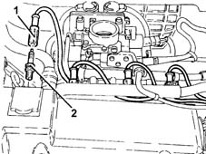
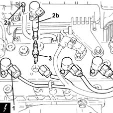

5510D10 spark plugs - r+r
- Path
- Procedures > 55 ELECTRICAL EQUIPMENT > 5510 ENGINE IGNITION > 5510D spark plugs and lead > 5510D10 spark plugs - r+r
- Kind
- repair procedure (removal / refitting; the operation number is the code)
- Applies to
- engines: 1.2 8v, 1.2 16v, 1.4 16v; all production periods
- Interactive page
- https://sloeber94.github.io/elrnDB-lYpsln/en/#/2429383
Applies to: engines: 1.2 8v; all production periods
 Removing
Removing
 Refitting
RefittingEnsure that the ignition key is in OFF position, then disconnect the battery negative terminal (-).
 | Name | Connector |
|---|---|---|
- | Battery |
Proceed with removal 1048A10 air cleaner filtering element - replace .
1. Disconnect the spark plug high tension leads.
Blow through with compressed air in spark plug openings and remove any impurities or traces of dirt.
2. Undo the spark plugs and remove them.

Applies to: engines: 1.2 16v, 1.4 16v; all production periods
Removing
RefittingEnsure that the ignition key is in OFF position, then disconnect the battery negative terminal (-).
| Name | Connector |
|---|---|---|
- | Battery |
Proceed with removal 1048A10 air cleaner filtering element - replace .
1. Disconnect the electrical connections from the ignition coils.
| Name | Connector |
|---|---|---|
1 | Ignition 'coil |
2. Undo the bolts (2a) and remove the ignition coils (2b).
Blow through with compressed air in spark plug openings and remove any impurities or traces of dirt.
3. Undo the spark plugs and remove them.

Applies to: engines: 1.2 8v; all production periods
Refitting
RemovingPlace the spark plugs back in their housings and tighten them to the recommended torque.
 | Fastening | Component | Ø | Value (daNm) |
|---|---|---|---|---|
- | - | SPARK PLUGS | M14 | (Cylinder head side) 2.3 ÷ 2.8 |
Connect the high tension leads to the spark plugs.
Proceed with refitting 1048A10 air cleaner filtering element - replace .
Connect the negative (-) battery terminal.
Applies to: engines: 1.2 16v, 1.4 16v; all production periods
Refitting
RemovingPlace the spark plugs back in their housings and tighten them to the recommended torque.
| Fastening | Component | Ø | Value (daNm) |
|---|---|---|---|---|
- | - | SPARK PLUGS | M14 | (Cylinder head side) 2.3 ÷ 2.8 |
Place the ignition coils back in their housings and tighten them using the bolts.
Connect the electrical connections to the ignition coils.
Proceed with refitting 1048A10 air cleaner filtering element - replace .
Connect the negative (-) battery terminal.
Topics linked from this page (3)
Topics that link to this page (12)
- B20 ENGINE STARTS, AND CUTS OUT STRAIGHT AWAY
- D01 ENGINE NOT RUNNING SMOOTHLY / (HESISTANT)
- D02 ENGINE NOT RUNNING SMOOTHLY / (LOSING POWER)
- D03 ENGINE NOT RUNNING SMOOTHLY / (IRREGULAR OPERATION)
- D05 ENGINE DOES NOT PRODUCE BEST PERFORMANCE
- D10 ENGINE IDLE IRREGULAR
- X01 EXCESSIVE FUEL CONSUMPTION
- Z54 MISFIRE ERROR IN ONE CYLINDER
- 0010K40 40,000km service coupon, emission control versions
- 0010K80 80,000km service coupon - emission control versions
- 0010M20 120,000km service coupon, emission control versions
- 0010M60 160,000km service coupon - emission control versions